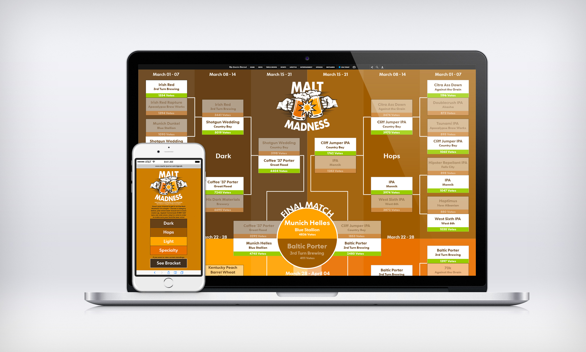

The Louisville area (including southern Indiana) is home to many boutique and craft beer breweries. The Courier-Journal wanted to create a digital service that allowed craft beer fans to vote on their favorite beers in correlation with the hype of the March Madness. The goal would be to increase social traffic by allowing users to vote on their favorite beer, and then share the results. Local breweries would be interested in participating due to increased awareness to their brand.
Stakeholders at the Courier-Journal wanted to provide a unique "Malt Madness" beer voting digital experience for their online subscribers. The goal was to generate social engagement by having users participate in using a digital product and sharing the result on social media.
We would measure success of the project based on unique visitors to the interactive project as well as generated social engagement (Facebook shares) from our younger online subscribers.
One of the unique challenges for this product was that the product needed to be responsive and work well for mobile, tablet, and desktop.
I did a little bit of digging to see if anyone else had produced a similar product. I did this to see if there would be any overlap in the product that we were creating. I also wanted to see what was successful about similar projects and to see if I could learn from any pitfalls in the competitor’s project. In this case the Indy Star had previously produced a similar interactive. I noted a few touch points that could be problematic and made a mental note of them. As I only had an hour for this phase, unfortunately, a thorough competitive analysis could not be completed.
While sitting with the developer, we discussed the interactive while I sketched some potential user flows and some interaction points. I completed a rough wireframe of the desktop/mobile layout as we as the mobile. We had to design the user flow a little differently for mobile. The user would need to pick a category of beer first, and then vote. This was different than the desktop/mobile view where the user could vote for each category simultaneously.
Once we had the rough wireframe settled, the developer started coding while I started producing the look/feel with a high fidelity mockup. I would have liked to produce a low fidelity prototype and complete some unmoderated usability testing, but I was not afforded the time. I was told to complete the high fidelity screens so that we could show the advertising department and then move on to my next project.
We launched the project a month ahead of the March Madness tournament and heavily promoted the interactive on social media. The result was that we had many people participate and share their votes on social media as well.
In fact, with all of the participants, the local breweries took notice and encouraged people to vote. Breweries wanted bragging rights for winning the contest so much that somewhere along the way we had many instances of cheating. Users discovered a way to vote more than they were allowed in a 24 hour period. I suppose that means that the business goals were met, and we will work harder on the prevention of cheating in the next iteration.